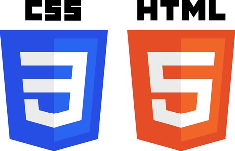
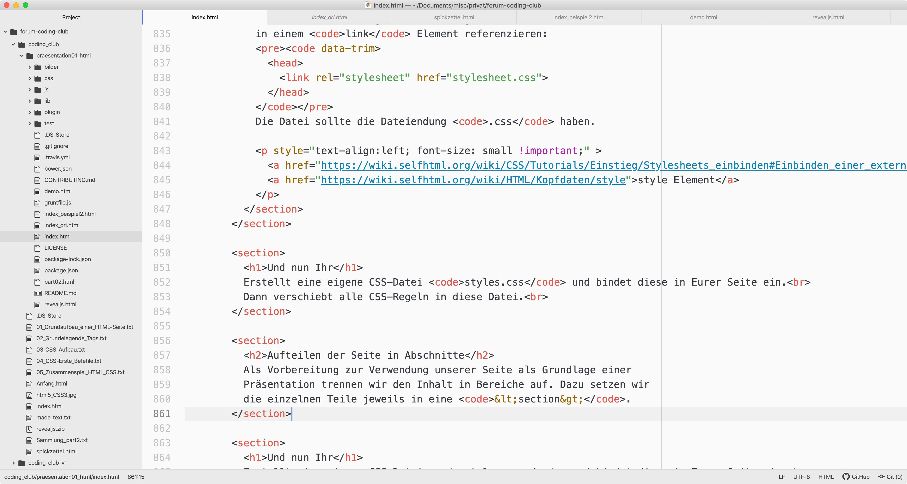
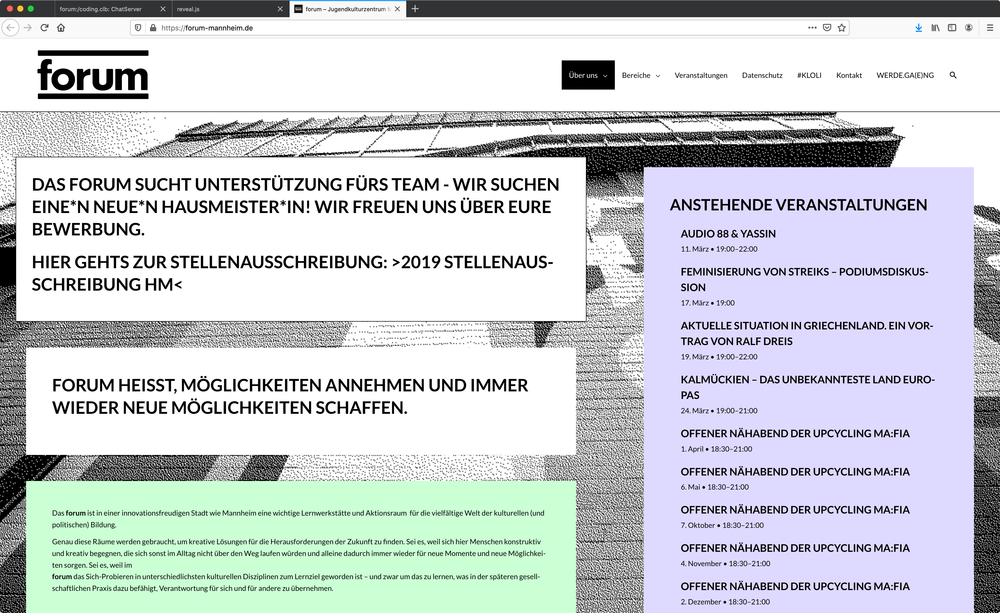
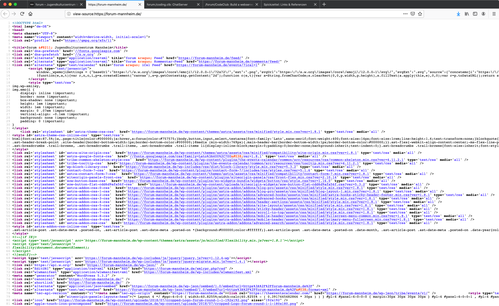
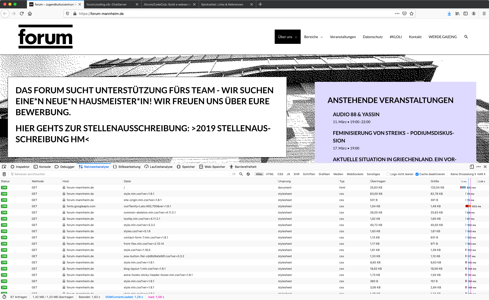
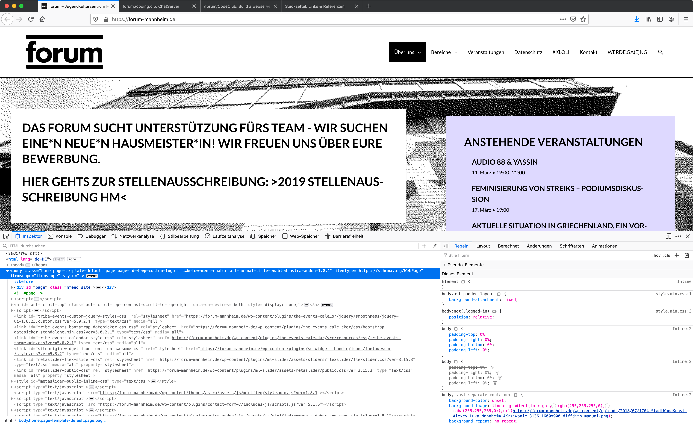

/forum/CodingClub
Wir gestalten eine Website
Wir wollen heute etwas darüber erfahren, wie man einen Webauftritt erstellen und gestalten kann.
Dazu wollen wir uns mit den grundlegenden Sprachen näher bekannt machen
Stellt euch doch mal kur vor.
Was uns beide interessiert:
Habt Ihr Vorwissen - vielleicht schon mal programmiert?
Was sind eure Erwartungen, was wollt ihr heute gerne erreichen?
Kurzer Hinweis
Der Großteil dieser Präsentation und des Workshop-Materials ist auf Deutsch, allerdings enthalten die
verwendeten Programmiersprachen viele englische Begriffe.
Referenzen auf weiterführende Seiten sind sind wo möglich ebenfalls auf Deutsch, aber im Internet gibt es sehr viel
gute Dokumentation auf Englisch, insofern sind Englischkenntnisse von Vorteil ;-)
günstiger Mini-Computer (~35 EUR)
Open Source-Betriebssystem

Worum es heute gehen wird
Doch eins nach dem Anderen
Name: Hugo Giese Geboren: X.Y.1960 In: Heidelberg Wohnhaft in: Eppelheim Meine Hobbies: Coding Webseiten Füllhalter Elektronik Weitere Interessen: Philosophie Obwohl nicht mehr der jüngsten Einer, macht es mir Spaß mich mit den aktuellen Themen der Informatik aber auch der Webentwicklung und da mit NODE und Javascript zu beschäftigen. Programmiersprachen: ABAP, Cobol, JavaScript, Perl habe ich schon benutzt
Nun Ihr
Baut eine Profilseite als reinen Text mit einem Editor auf.HTML
- Hyper-
- text
- Markup
- Language
Markup
Die Wikipedia sagt dazu: Mit Auszeichnungssprachen werden Eigenschaften, Zugehörigkeiten und Darstellungsformen von Abschnitten eines Textes [...] beschrieben. [...]indem sie mit Tags markiert werden. (Quelle Wikipedia)Grundaufbau eines HTML-Dokuments
Nun Ihr
Macht aus eurem Text ein HTML-Dokument indem Ihr euren Text in den Body-Bereich der Grundstruktur setzt, bzw. die Tags um den Text herum baut.TAGS
Tags sind Kennzeichen, Markierungen, die einen Teil des Textes Auszeichnen. Diese Tags bilden das Markup in htMl und sollen die Struktur des Dokuments steuern.Regeln
Grundelegende Tags
Überschriften
<h1> ... <h6> Kennzeichnet einen Bereich als Überschrift der Verschachtelungsstufe 1 - 6<section>, <div>, <p>
Kennzeichnet einen Bereich als Kapitel, Abschnitt oder Absatz.Diese Tags sind wichtig um zusammengehörige Bereiche zu markieren.
<br>
Erzeugt einen Zeilenumbruch im Text.Tags, die das aussehen etwas steuern
<em> oder <I>
Gibt den umschlossenen Text kursiv aus.<strong> oder <b>
Gibt den umschlossenen Text in fett aus<small>
Der umschlossene Text wird in einem kleineren Zeichensatz ausgegeben.- <section></section>, <div></div>
- <p></p>
- <br>
- <em></em> oder <i></i>
- <strong></strong> oder <b></b>
- <small></small>
Und nun Ihr
Verwendet die bislang bekannten Tags und schaut euch euren Text im Browser an.Was mach nun aber eine Menge von Seiten zum Web
Bislang haben wir einen Text gestaltet und strukturiert.
Da hat das Hyper im Hypertext noch keine Rolle gespielt.
Und auch fremde Ressourcen haben wir bislang noch nicht eingebunden.
Aus einem Text einen
Hyptertext machen
Das Anker - Tag
<a href="Hier steht die Adresse">Hier kommt der sichtbare Teil des Tags</a>Absolute und Relative Adressen
Zuvor noch ein kurzer Ausflug in die Gestaltung von Adressen, die wir einbinden wollen.Absolute Adresse
<https://forum-mannheim.de/team/>Die Bestandteile
HTTPS
Das Protokollforum-mannheim
Die "Domain" der eigentliche Ankerpunkt der DateiDie Top Level Domain
Zentral verwaltete Bereiche des WWW. Hier eine Länderdomain nach ISO 3166 Alpha 2Weitere: org, mil, gov, edu, com, biz ...
team
eigene Unterbereiche, die der Webmaster selbst verwaltet.Dateiname
Der ist hier nicht angegeben. In dem Fall zieht der Standard des Webserver meist index.html oder index.htm oder auch je nach Konfiguration, index.phb oder index.plRelative Adressen
Beziehen sich auf den Webserver, auf man sich gerade befindet und geben die Position und den Namen des Datei innerhalb des aktuellen Webpräsenz an.
- Keine externe Adressauflösung
- weniger Schreibarbeit
Bilder einbinden
<img src="hier steht die Adresse zur Bilddatei">IMG ist ein Leertag wie br
Es gibt kein Endetag und es wird nichts im eigentlichen Taginhalt erwartet. Alle Informationen stehen in den Attributen des Tags.Und nun wollen wir das aber noch besser aufhübschen
Darum gehen wir nun an die Gestaltung mit CSS.CSS
- Cascading
- Style
- Sheets
Ein erstes Beispiel
style-Attribut kann an jedem beliebigen Element hinzugefügt werden
und enthält eine Menge von Formatierungsanweisungen.
Alles in rot mit blauem Rahmen!
Alles in rot mit blauem Rahmen!
Alle HTML Elemente können auf diese Weise beliebig verändert werden.
Eine Referenz findet sich auf Self-HTML.
Formatierung und Darstellung
Schriftformatierung
Es grünt
so grün
wenn Spaniens Blüten blüh'n!
Es grünt so grün wenn Spaniens Blüten blüh'n!
Schriftgröße
Ein Text!
Ein Text!
Ein Text!
Ein Text!
Ein Text!
Ein Text!
Ein Text!
Ein Text!
Ein Text!
Ein Text!
Farben
rot,
grün,
blau,
weiß auf schwarz
Textausrichtung
Text links ausgerichtet!
Text mittig ausgerichtet!
Text rechts ausgerichtet!
Text links ausgerichtet!
Text mittig ausgerichtet!
Text rechts ausgerichtet!
Und nun Ihr
Probiert die Textdarstellung in Eurem Text aus!Box Modell
Der Browser zeichnet alle Elemente als Rechtecke mit bestimmten Eigenschaften. Jedes Rechteck (oder Box) besteht aus dem Inhaltsbereich mit dem eigentlichen Inhalt (Text, Bilder, ...) sowie einem Innenabstand (padding), einem Rahmen (border) und einem Außenabstand (margin).Box Modell
Alle Elemente folgen dem sogenannten Box Modell, das die grundsätzliche Darstellung und Ausrichtung eines Elements beschreibt.

Abstände & Rahmen
Text im Kasten
Text im Kasten
Text im Kasten
Größe
Mit width und height kannman Breite und Höhe jedes Elements angeben.
Die Angaben können in Pixel, Prozent oder weiteren Maßeinheiten erfolgen.
Hintergrundfarbe
Text im Kasten
Text im Kasten
Text im Kasten
Hintergrundbild
Text vor Hintergrundbild
Und nun Ihr
Probiert die Rahmen, Abstände, etc. in Eurem Dokument aus!Layout und Ausrichtung
Ausrichtung von Elementen
Es gibt zwei Arten von Elementen: block und inline.
block Elemente (z.B. div oder p) werden
üblicherweise untereinander angeordnet und inline Elemente (z.B.
span oder a) nebeneinander, z.B. im Fließtext.
display: block
Text1
Text2
display: inline
Text1
Text2
Typisches Seitenlayout
Kopfzeile
Navigation
Inhalt
Fußzeile
Typisches Seitenlayout
Während man früher of Tabellen zur Positionierung von Elementen verwendet hat, würde man heutzutage eher das FlexBox- oder Grid-Layout verwenden, aber das führt für heute zu weit...Und nun Ihr
Baut eine Kopfzeile, Fußzeile, ggf. Seitenleiste ein!Nutzt dabei ggf. auch Hintergrundfarben oder -bilder.
Definition von CSS Regeln
style Attribut erfolgen.
Allerdings gibt es hierbei sehr viel Wiederholung, wenn man den gleichen Stil für viele Elemente
verwenden will. Daher kann man die CSS-Eigenschaften auch für die ganze Datei anhand von
sogenannten Selektoren definieren.
CSS Definition im style Element
Das style Element innerhalb des head Elements
oben in der HTML-Datei kann eine Vielzahl von Regeln enthalten.
CSS Definition in einer Datei
Alternativ kann man auch alle Regeln in eine eigene Datei schreiben und diese in einemlink Element referenzieren:
.css haben.
CSS Selektoren
Mittels sogenannter Selektoren kann man die Style-Attribute an die HTML Elemente binden:
CSS Selektoren
Diese können entweder für alle Elemente eines Typs (im Beispielbody),
einer Klasse (<div class="myclass"> ... </div>) oder einem Element mit einer
bestimmten, eindeutigen ID (<div id="myid"> ... </div>) zugewiesen werden.
Und nun Ihr
Verschiebt allestyle in ein style Element im Kopfteil der HTML Seite.
Teil 2
- Kurze Wiederholung
- Die richtigen Werkzeuge
- Trennen der Seite in HTML und CSS, Aufteilen der Seite in Abschnitte
- Bauen einer Präsentation
- Kurzer Exkurs zu freier Software
Kurze Wiederholung
HTML
Elemente stehen in spitzen Klammern und haben haben i.d.R. ein Start-Tag und ein Ende-Tag. Zusätzliche Attribute können weitere Angaben machen.
weiterer HTML Inhalt
Mein Link
- <section></section>, <div></div>
- <p></p>
- <br>
- <em></em> oder <i></i>
- <strong></strong> oder <b></b>
- <small></small>
- <a></a>
- <img>
CSS
Mit CSS kann man das Aussehen von Elementen steuern. Dazu gehören Ausrichtung, Textformatierung, grafische Effekte, usw.
CSS-Regeln können entweder für jedes Element individuell mittels style Attribut
oder global anhand von Selektoren (z.B. per class Attribut)
für viele Elemente auf einmal definiert werden.
Es grünt
so grün
wenn Spaniens Blüten blüh'n!
Die richtigen Werkzeuge
Der richtige Editor
Ein guter Texteditor bietet Syntax Highlighting und unterstützt die Benutzer*Innen beim Erstellen von Webseiten durch viele kleine Hilfestellungen.
- Geany (gibt es auch auf Eurem Raspberry Pi!)
- Notepad++ (nur Windows)
- Atom
- Visual Studio Code (ausgewachsene Entwicklungsumgebung)
Dem Browser unter die Haube schauen
Ein Browser macht eine ganze Menge, um eine Webseite darzustellen. Er lässt sich dabei aber tief in die Karten schauen, sodass man sich auch abschauen kann, wie man etwas macht, das man auf einer Webseite sieht.
Ein Browser hat alles dabei, um unter die Haube zu schauen:
Developer Tools für Neugierige!



Trennen der Seite in HTML und CSS
- Saubere Trennnung von Inhalt und Darstellung
- Widerverwendbarkeit von Regeln, auch für mehrere Dateien oder Projekte
CSS Definition in einer Datei
Man kann alle CSS Regeln in eine eigene Datei schreiben und diese in einemlink Element referenzieren:
.css haben.
Und nun Ihr
Erstellt eine eigene CSS-Datei stylesheet.css und bindet diese in Eurer Seite ein.
Dann verschiebt alle CSS-Regeln in diese Datei.
Hinweis: ggf. ist es einfacher, alle style-Attribute zu löschen und nur den Text und die Bilder in die neue Datei zu übernehmen...
Aufteilen der Seite in Abschnitte
Als Vorbereitung zur Verwendung unserer Seite als Grundlage einer Präsentation trennen wir den Inhalt in Bereiche auf. Dazu setzen wir die einzelnen Teile jeweils in eine<section>.
<html>
<head>
...
</head>
<body>
Erster Teil: Über mich
Zweiter Teil: meine Hobbies
Dritter Teil: Sonstiges
</body>
</html>
Und nun Ihr
Teilt Eure Seite mithilfe von<section> in verschiedene Teile auf.Diese Bereiche verwenden wir später als Grundlage für die Erstellung einer Präsentation.
Reveal.js: Präsentationen mit HTML bauen
Diese Präsentation ist mit reveal.js erstellt. Alles was man zum Erstellen braucht, sind ein Texteditor und ein Webbrowser!
Die Möglichkeiten von reveal.js könnt Ihr direkt in der Demo ausprobieren...
Was ist Reveal.JS?
revealjs.comWarum machen wir das in diesem Zusammenhang?
Und damit etwas vom Kurs übrig bleibt, das auch ohne Webspace und Webserver verwendet werden kann.
Möglichkeiten der Individualisierung
Vertical Slides
Themes
Transitions
Customization / Anpassung
Beispiel einer angepassten Seite
Begriffserklärung HTMLUnd nun Ihr
Wir wollen nun unsere eigene Seite in eine Präsentation umbauen.
Alternativ könnt Ihr natürlich auch etwas komplett Neues machen...
index.html modifiziert
und Eure eigenen Inhalte einfügt.
Freie Software (Open Source)
Als Open Source (aus englisch open source, wörtlich offene Quelle) wird Software bezeichnet, deren Quelltext öffentlich und von Dritten eingesehen, geändert und genutzt werden kann. Open-Source-Software kann meistens kostenlos genutzt werden.
Verwenden von freier Software
Freie Software kann i.d.R. kostenlos aus dem Internet runtergeladen und von jeder/m nach Belieben verwendet werden.Beispiele freier Software
Firefox, Chromium, Thunderbird, OpenOffice, Linux, Notepad++, reveal.js, viele Programmiersprachen und Entwicklungstools, ...Ändern oder erweitern von freier Software
Im Prinzip kann jeder zu freier Software beitragen, mit Code, Dokumentation, Hilfestellung bei Problemen, ...Was hat Euch gefallen, was nicht?
Was habt Ihr mitgenommen?
Was probiert Ihr jetzt vielleicht selbst mal zu Hause aus? Was würde Euch sonst interessieren?